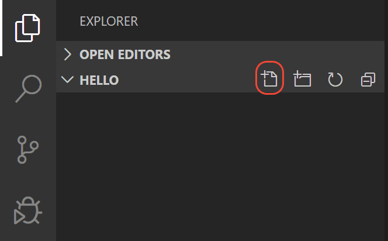
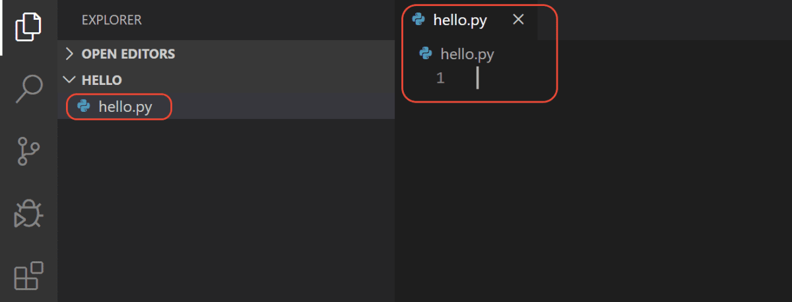

Getting Started with Python in VS Code
In this tutorial, you use Python 3 to create the simplest Python "Hello World" application in Visual Studio Code. By using the Python extension, you make VS Code into a great lightweight Python IDE (which you may find a productive alternative to PyCharm).
This tutorial introduces you to VS Code as a Python environment, primarily how to edit, run, and debug code through the following tasks:
- Write, run, and debug a Python "Hello World" Application
- Learn how to install packages by creating Python virtual environments
- Write a simple Python script to plot figures within VS Code
This tutorial is not intended to teach you Python itself. Once you are familiar with the basics of VS Code, you can then follow any of the programming tutorials on python.org within the context of VS Code for an introduction to the language.
If you have any problems, you can search for answers or ask a question on the Python extension Discussions Q&A.
Prerequisites
To successfully complete this tutorial, you need to first setup your Python development environment. Specifically, this tutorial requires:
- Python 3
- VS Code application
- VS Code Python extension
Install Visual Studio Code and the Python Extension
-
If you have not already done so, install VS Code.
-
Next, install the Python extension for VS Code from the Visual Studio Marketplace. For additional details on installing extensions, see Extension Marketplace. The Python extension is named Python and it's published by Microsoft.
Install a Python interpreter
Along with the Python extension, you need to install a Python interpreter. Which interpreter you use is dependent on your specific needs, but some guidance is provided below.
Windows
Install Python from python.org. You can typically use the Download Python button that appears first on the page to download the latest version.
Note: If you don't have admin access, an additional option for installing Python on Windows is to use the Microsoft Store. The Microsoft Store provides installs of Python 3.7, Python 3.8, Python 3.9, and Python 3.10.
For additional information about using Python on Windows, see Using Python on Windows at Python.org
macOS
The system install of Python on macOS is not supported. Instead, a package management system like Homebrew is recommended. To install Python using Homebrew on macOS use brew install python3 at the Terminal prompt.
Note On macOS, make sure the location of your VS Code installation is included in your PATH environment variable. See these setup instructions for more information.
Linux
The built-in Python 3 installation on Linux works well, but to install other Python packages you must install pip with get-pip.py.
Other options
-
Data Science: If your primary purpose for using Python is Data Science, then you might consider a download from Anaconda. Anaconda provides not just a Python interpreter, but many useful libraries and tools for data science.
-
Windows Subsystem for Linux: If you are working on Windows and want a Linux environment for working with Python, the Windows Subsystem for Linux (WSL) is an option for you. If you choose this option, you'll also want to install the WSL extension. For more information about using WSL with VS Code, see VS Code Remote Development or try the Working in WSL tutorial, which will walk you through setting up WSL, installing Python, and creating a Hello World application running in WSL.
Verify the Python installation
To verify that you've installed Python successfully on your machine, run one of the following commands (depending on your operating system):
-
Linux/macOS: open a Terminal Window and type the following command:
python3 --version -
Windows: open a command prompt and run the following command:
py -3 --version
If the installation was successful, the output window should show the version of Python that you installed.
Note You can use the
py -0command in the VS Code integrated terminal to view the versions of python installed on your machine. The default interpreter is identified by an asterisk (*).
Start VS Code in a project (workspace) folder
Using a command prompt or terminal, create an empty folder called "hello", navigate into it, and open VS Code (code) in that folder (.) by entering the following commands:
mkdir hello
cd hello
code .
Note: If you're using an Anaconda distribution, be sure to use an Anaconda command prompt.
By starting VS Code in a folder, that folder becomes your "workspace". VS Code stores settings that are specific to that workspace in .vscode/settings.json, which are separate from user settings that are stored globally.
Alternately, you can run VS Code through the operating system UI, then use File > Open Folder to open the project folder.
Select a Python interpreter
Python is an interpreted language, and in order to run Python code and get Python IntelliSense, you must tell VS Code which interpreter to use.
From within VS Code, select a Python 3 interpreter by opening the Command Palette (P (Windows, Linux Ctrl+Shift+P)), start typing the Python: Select Interpreter command to search, then select the command. You can also use the Select Python Environment option on the Status Bar if available (it may already show a selected interpreter, too):

The command presents a list of available interpreters that VS Code can find automatically, including virtual environments. If you don't see the desired interpreter, see Configuring Python environments.
Note: When using an Anaconda distribution, the correct interpreter should have the suffix
('base':conda), for examplePython 3.7.3 64-bit ('base':conda).
Selecting an interpreter sets which interpreter will be used by the Python extension for that workspace.
Note: If you select an interpreter without a workspace folder open, VS Code sets
python.defaultInterpreterPathin User scope instead, which sets the default interpreter for VS Code in general. The user setting makes sure you always have a default interpreter for Python projects. The workspace settings lets you override the user setting.
Create a Python Hello World source code file
From the File Explorer toolbar, select the New File button on the hello folder:

Name the file hello.py, and it automatically opens in the editor:

By using the .py file extension, you tell VS Code to interpret this file as a Python program, so that it evaluates the contents with the Python extension and the selected interpreter.
Note: The File Explorer toolbar also allows you to create folders within your workspace to better organize your code. You can use the New folder button to quickly create a folder.
Now that you have a code file in your Workspace, enter the following source code in hello.py:
msg = "Hello World"
print(msg)
When you start typing print, notice how IntelliSense presents auto-completion options.
IntelliSense and auto-completions work for standard Python modules as well as other packages you've installed into the environment of the selected Python interpreter. It also provides completions for methods available on object types. For example, because the msg variable contains a string, IntelliSense provides string methods when you type msg.:

Feel free to experiment with IntelliSense some more, but then revert your changes so you have only the msg variable and the print call, and save the file (S (Windows, Linux Ctrl+S)).
For full details on editing, formatting, and refactoring, see Editing code. The Python extension also has full support for Linting.
Run Hello World
It's simple to run hello.py with Python. Just click the Run Python File in Terminal play button in the top-right side of the editor.

The button opens a terminal panel in which your Python interpreter is automatically activated, then runs python3 hello.py (macOS/Linux) or python hello.py (Windows):
There are three other ways you can run Python code within VS Code:
-
Right-click anywhere in the editor window and select Run Python File in Terminal (which saves the file automatically):
-
Select one or more lines, then press Shift+Enter or right-click and select Run Selection/Line in Python Terminal. This command is convenient for testing just a part of a file.
-
From the Command Palette (P (Windows, Linux Ctrl+Shift+P)), select the Python: Start REPL command to open a REPL terminal for the currently selected Python interpreter. In the REPL, you can then enter and run lines of code one at a time.
Configure and run the debugger
Let's now try debugging our simple Hello World program.
First, set a breakpoint on line 2 of hello.py by placing the cursor on the print call and pressing F9. Alternately, just click in the editor's left gutter, next to the line numbers. When you set a breakpoint, a red circle appears in the gutter.
Next, to initialize the debugger, press F5. Since this is your first time debugging this file, a configuration menu will open from the Command Palette allowing you to select the type of debug configuration you would like for the opened file.

Note: VS Code uses JSON files for all of its various configurations; launch.json is the standard name for a file containing debugging configurations.
These different configurations are fully explained in Debugging configurations; for now, just select Python File, which is the configuration that runs the current file shown in the editor using the currently selected Python interpreter.
You can also start the debugger by clicking on the down-arrow next to the run button on the editor, and selecting Debug Python File in Terminal.
The debugger will stop at the first line of the file breakpoint. The current line is indicated with a yellow arrow in the left margin. If you examine the Local variables window at this point, you will see now defined msg variable appears in the Local pane.

A debug toolbar appears along the top with the following commands from left to right: continue (F5), step over (F10), step into (F11), step out (F11 (Windows, Linux Shift+F11)), restart (F5 (Windows, Linux Ctrl+Shift+F5)), and stop (F5 (Windows, Linux Shift+F5)).

The Status Bar also changes color (orange in many themes) to indicate that you're in debug mode. The Python Debug Console also appears automatically in the lower right panel to show the commands being run, along with the program output.
To continue running the program, select the continue command on the debug toolbar (F5). The debugger runs the program to the end.
Tip Debugging information can also be seen by hovering over code, such as variables. In the case of
msg, hovering over the variable will display the stringHello worldin a box above the variable.
You can also work with variables in the Debug Console (If you don't see it, select Debug Console in the lower right area of VS Code, or select it from the ... menu.) Then try entering the following lines, one by one, at the > prompt at the bottom of the console:
msg
msg.capitalize()
msg.split()

Select the blue Continue button on the toolbar again (or press F5) to run the program to completion. "Hello World" appears in the Python Debug Console if you switch back to it, and VS Code exits debugging mode once the program is complete.
If you restart the debugger, the debugger again stops on the first breakpoint.
To stop running a program before it's complete, use the red square stop button on the debug toolbar (F5 (Windows, Linux Shift+F5)), or use the Run > Stop debugging menu command.
For full details, see Debugging configurations, which includes notes on how to use a specific Python interpreter for debugging.
Tip: Use Logpoints instead of print statements: Developers often litter source code with
Install and use packages
Let's now run an example that's a little more interesting. In Python, packages are how you obtain any number of useful code libraries, typically from PyPI. For this example, you use the matplotlib and numpy packages to create a graphical plot as is commonly done with data science. (Note that matplotlib cannot show graphs when running in the Windows Subsystem for Linux as it lacks the necessary UI support.)
Return to the Explorer view (the top-most icon on the left side, which shows files), create a new file called standardplot.py, and paste in the following source code:
import matplotlib.pyplot as plt
import numpy as np
x = np.linspace(0, 20, 100) # Create a list of evenly-spaced numbers over the range
plt.plot(x, np.sin(x)) # Plot the sine of each x point
plt.show() # Display the plot
Tip: If you enter the above code by hand, you may find that auto-completions change the names after the
askeywords when you press Enter at the end of a line. To avoid this, type a space, then Enter.
Next, try running the file in the debugger using the "Python: Current file" configuration as described in the last section.
Unless you're using an Anaconda distribution or have previously installed the matplotlib package, you should see the message, "ModuleNotFoundError: No module named 'matplotlib'". Such a message indicates that the required package isn't available in your system.
To install the matplotlib package (which also installs numpy as a dependency), stop the debugger and use the Command Palette to run Terminal: Create New Terminal (` (Windows, Linux Ctrl+Shift+`)). This command opens a command prompt for your selected interpreter.
A best practice among Python developers is to avoid installing packages into a global interpreter environment. You instead use a project-specific virtual environment that contains a copy of a global interpreter. Once you activate that environment, any packages you then install are isolated from other environments. Such isolation reduces many complications that can arise from conflicting package versions. To create a virtual environment and install the required packages, enter the following commands as appropriate for your operating system:
Note: For additional information about virtual environments, see Environments.
-
Create and activate the virtual environment
Virtual environment creation for Windows
py -3 -m venv .venv .venv\scripts\activateIf the activate command generates the message "Activate.ps1 is not digitally signed. You cannot run this script on the current system.", then you need to temporarily change the PowerShell execution policy to allow scripts to run (see About Execution Policies in the PowerShell documentation):
Set-ExecutionPolicy -ExecutionPolicy RemoteSigned -Scope ProcessVirtual environment creation for macOS/Linux
python3 -m venv .venv source .venv/bin/activateNote: When you create a new virtual environment, you should be prompted by VS Code to set it as the default for your workspace folder. If selected, the environment will automatically be activated when you open a new terminal.
-
Select your new environment by using the Python: Select Interpreter command from the Command Palette.

-
Install the packages
# Don't use with Anaconda distributions because they include matplotlib already. # macOS python3 -m pip install matplotlib # Windows (may require elevation) python -m pip install matplotlib # Linux (Debian) apt-get install python3-tk python3 -m pip install matplotlib -
Rerun the program now (with or without the debugger) and after a few moments a plot window appears with the output:
-
Once you are finished, type
deactivatein the terminal window to deactivate the virtual environment.
For additional examples of creating and activating a virtual environment and installing packages, see the Django tutorial and the Flask tutorial.
Next steps
You can configure VS Code to use any Python environment you have installed, including virtual and conda environments. You can also use a separate environment for debugging. For full details, see Environments.
To learn more about the Python language, follow any of the programming tutorials listed on python.org within the context of VS Code.
To learn to build web apps with the Django and Flask frameworks, see the following tutorials:
There is then much more to explore with Python in Visual Studio Code:
- Editing code - Learn about autocomplete, IntelliSense, formatting, and refactoring for Python.
- Linting - Enable, configure, and apply a variety of Python linters.
- Debugging - Learn to debug Python both locally and remotely.
- Testing - Configure test environments and discover, run, and debug tests.
- Settings reference - Explore the full range of Python-related settings in VS Code.
- Deploy Python to Azure App Service using containers
- Deploy Python to Azure App Service on Linux